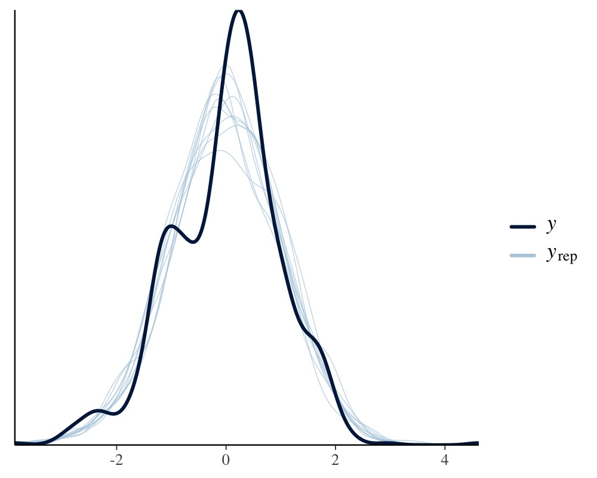
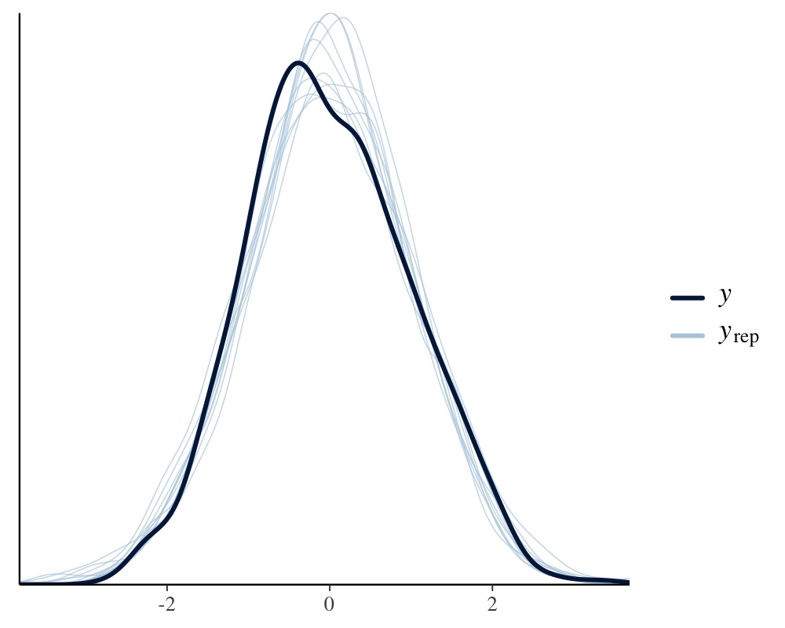

Estimating Multivariate Models with brms
Paul Bürkner
2019-02-19
Source:vignettes/brms_multivariate.Rmd
brms_multivariate.RmdIntroduction
In the present vignette, we want to discuss how to specify multivariate multilevel models using brms. We call a model multivariate if it contains multiple response variables, each being predicted by its own set of predictors. Consider an example from biology. Hadfield, Nutall, Osorio, and Owens (2007) analyzed data of the Eurasian blue tit (https://en.wikipedia.org/wiki/Eurasian_blue_tit). They predicted the tarsus length as well as the back color of chicks. Half of the brood were put into another fosternest, while the other half stayed in the fosternest of their own dam. This allows to separate genetic from environmental factors. Additionally, we have information about the hatchdate and sex of the chicks (the latter being known for 94% of the animals).
tarsus back animal dam fosternest hatchdate sex
1 -1.89229718 1.1464212 R187142 R187557 F2102 -0.6874021 Fem
2 1.13610981 -0.7596521 R187154 R187559 F1902 -0.6874021 Male
3 0.98468946 0.1449373 R187341 R187568 A602 -0.4279814 Male
4 0.37900806 0.2555847 R046169 R187518 A1302 -1.4656641 Male
5 -0.07525299 -0.3006992 R046161 R187528 A2602 -1.4656641 Fem
6 -1.13519543 1.5577219 R187409 R187945 C2302 0.3502805 FemBasic Multivariate Models
We begin with a relatively simple multivariate normal model.
fit1 <- brm(
mvbind(tarsus, back) ~ sex + hatchdate + (1|p|fosternest) + (1|q|dam),
data = BTdata, chains = 2, cores = 2
)As can be seen in the model code, we have used mvbind notation to tell brms that both tarsus and back are separate response variables. The term (1|p|fosternest) indicates a varying intercept over fosternest. By writing |p| in between we indicate that all varying effects of fosternest should be modeled as correlated. This makes sense since we actually have two model parts, one for tarsus and one for back. The indicator p is arbitrary and can be replaced by other symbols that comes into your mind (for details about the multilevel syntax of brms, see help("brmsformula") and vignette("brms_multilevel")). Similarily, the term (1|q|dam) indicates correlated varying effects of the genetic mother of the chicks. Alternatively, we could have also modeled the genetic similarities through pedigrees and corresponding relatedness matrices, but this is not the focus of this vignette (please see vignette("brms_phylogenetics")). The model results are readily summarized via
Family: MV(gaussian, gaussian)
Links: mu = identity; sigma = identity
mu = identity; sigma = identity
Formula: tarsus ~ sex + hatchdate + (1 | p | fosternest) + (1 | q | dam)
back ~ sex + hatchdate + (1 | p | fosternest) + (1 | q | dam)
Data: BTdata (Number of observations: 828)
Samples: 2 chains, each with iter = 2000; warmup = 1000; thin = 1;
total post-warmup samples = 2000
Group-Level Effects:
~dam (Number of levels: 106)
Estimate Est.Error l-95% CI u-95% CI Eff.Sample Rhat
sd(tarsus_Intercept) 0.48 0.05 0.39 0.57 811 1.00
sd(back_Intercept) 0.25 0.07 0.11 0.39 401 1.00
cor(tarsus_Intercept,back_Intercept) -0.51 0.22 -0.91 -0.07 629 1.00
~fosternest (Number of levels: 104)
Estimate Est.Error l-95% CI u-95% CI Eff.Sample Rhat
sd(tarsus_Intercept) 0.27 0.05 0.16 0.38 634 1.00
sd(back_Intercept) 0.35 0.06 0.23 0.47 549 1.00
cor(tarsus_Intercept,back_Intercept) 0.70 0.20 0.27 0.99 296 1.00
Population-Level Effects:
Estimate Est.Error l-95% CI u-95% CI Eff.Sample Rhat
tarsus_Intercept -0.41 0.07 -0.55 -0.27 1040 1.00
back_Intercept -0.01 0.07 -0.14 0.11 2404 1.00
tarsus_sexMale 0.77 0.06 0.65 0.88 2824 1.00
tarsus_sexUNK 0.23 0.13 -0.02 0.48 3528 1.00
tarsus_hatchdate -0.04 0.06 -0.15 0.07 1240 1.00
back_sexMale 0.01 0.07 -0.13 0.14 3086 1.00
back_sexUNK 0.15 0.16 -0.17 0.44 3152 1.00
back_hatchdate -0.09 0.05 -0.19 0.01 1908 1.00
Family Specific Parameters:
Estimate Est.Error l-95% CI u-95% CI Eff.Sample Rhat
sigma_tarsus 0.76 0.02 0.71 0.80 2161 1.00
sigma_back 0.90 0.02 0.86 0.95 2032 1.00
Residual Correlations:
Estimate Est.Error l-95% CI u-95% CI Eff.Sample Rhat
rescor(tarsus,back) -0.05 0.04 -0.13 0.03 2327 1.00
Samples were drawn using sampling(NUTS). For each parameter, Eff.Sample
is a crude measure of effective sample size, and Rhat is the potential
scale reduction factor on split chains (at convergence, Rhat = 1).The summary output of multivariate models closely resembles those of univariate models, except that the parameters now have the corresponding response variable as prefix. Within dams, tarsus length and back color seem to be negatively correlated, while within fosternests the opposite is true. This indicates differential effects of genetic and environmental factors on these two characteristics. Further, the small residual correlation rescor(tarsus, back) on the bottom of the output indicates that there is little unmodeled dependency between tarsus length and back color. Although not necessary at this point, we have already computed and stored the LOO information criterion of fit1, which we will use for model comparions. Next, let’s take a look at some posterior-predictive checks, which give us a first impression of the model fit.


This looks pretty solid, but we notice a slight unmodeled left skewness in the distribution of tarsus. We will come back to this later on. Next, we want to investigate how much variation in the response variables can be explained by our model and we use a Bayesian generalization of the \(R^2\) coefficient.
Estimate Est.Error Q2.5 Q97.5
R2tarsus 0.4342636 0.02374529 0.3861898 0.4788311
R2back 0.1991529 0.02745387 0.1465962 0.2518545Clearly, there is much variation in both animal characteristics that we can not explain, but apparently we can explain more of the variation in tarsus length than in back color.
More Complex Multivariate Models
Now, suppose we only want to control for sex in tarsus but not in back and vice versa for hatchdate. Not that this is particular reasonable for the present example, but it allows us to illustrate how to specify different formulas for different response variables. We can no longer use mvbind syntax and so we have to use a more verbose approach:
bf_tarsus <- bf(tarsus ~ sex + (1|p|fosternest) + (1|q|dam))
bf_back <- bf(back ~ hatchdate + (1|p|fosternest) + (1|q|dam))
fit2 <- brm(bf_tarsus + bf_back, data = BTdata, chains = 2, cores = 2)Note that we have literally added the two model parts via the + operator, which is in this case equivalent to writing mvbf(bf_tarsus, bf_back). See help("brmsformula") and help("mvbrmsformula") for more details about this syntax. Again, we summarize the model first.
Family: MV(gaussian, gaussian)
Links: mu = identity; sigma = identity
mu = identity; sigma = identity
Formula: tarsus ~ sex + (1 | p | fosternest) + (1 | q | dam)
back ~ hatchdate + (1 | p | fosternest) + (1 | q | dam)
Data: BTdata (Number of observations: 828)
Samples: 2 chains, each with iter = 2000; warmup = 1000; thin = 1;
total post-warmup samples = 2000
Group-Level Effects:
~dam (Number of levels: 106)
Estimate Est.Error l-95% CI u-95% CI Eff.Sample Rhat
sd(tarsus_Intercept) 0.48 0.05 0.40 0.59 1124 1.00
sd(back_Intercept) 0.25 0.07 0.10 0.39 389 1.01
cor(tarsus_Intercept,back_Intercept) -0.48 0.22 -0.93 -0.06 585 1.00
~fosternest (Number of levels: 104)
Estimate Est.Error l-95% CI u-95% CI Eff.Sample Rhat
sd(tarsus_Intercept) 0.27 0.06 0.15 0.38 691 1.00
sd(back_Intercept) 0.35 0.06 0.23 0.46 498 1.00
cor(tarsus_Intercept,back_Intercept) 0.68 0.22 0.18 0.98 274 1.00
Population-Level Effects:
Estimate Est.Error l-95% CI u-95% CI Eff.Sample Rhat
tarsus_Intercept -0.41 0.06 -0.54 -0.29 1950 1.00
back_Intercept 0.00 0.05 -0.10 0.11 2703 1.00
tarsus_sexMale 0.77 0.06 0.66 0.88 3814 1.00
tarsus_sexUNK 0.23 0.13 -0.02 0.48 4263 1.00
back_hatchdate -0.08 0.05 -0.19 0.01 2500 1.00
Family Specific Parameters:
Estimate Est.Error l-95% CI u-95% CI Eff.Sample Rhat
sigma_tarsus 0.76 0.02 0.72 0.80 2352 1.00
sigma_back 0.90 0.02 0.85 0.95 2536 1.00
Residual Correlations:
Estimate Est.Error l-95% CI u-95% CI Eff.Sample Rhat
rescor(tarsus,back) -0.05 0.04 -0.13 0.02 2785 1.00
Samples were drawn using sampling(NUTS). For each parameter, Eff.Sample
is a crude measure of effective sample size, and Rhat is the potential
scale reduction factor on split chains (at convergence, Rhat = 1).Let’s find out, how model fit changed due to excluding certain effects from the initial model:
LOOIC SE
fit1 4252.87 67.14
fit2 4249.93 67.19
fit1 - fit2 2.94 2.44Apparently, there is no noteworthy difference in the model fit. Accordingly, we do not really need to model sex and hatchdate for both response variables, but there is also no harm in including them (so I would probably just include them).
To give you a glimpse of the capabilities of brms’ multivariate syntax, we change our model in various directions at the same time. Remember the slight left skewness of tarsus, which we will now model by using the skew_normal family instead of the gaussian family. Since we do not have a multivariate normal (or student-t) model, anymore, estimating residual correlations is no longer possible. We make this explicit using the set_rescor function. Further, we investigate if the relationship of back and hatchdate is really linear as previously assumed by fitting a non-linear spline of hatchdate. On top of it, we model separate residual variances of tarsus for males and femals chicks.
bf_tarsus <- bf(tarsus ~ sex + (1|p|fosternest) + (1|q|dam)) +
lf(sigma ~ 0 + sex) + skew_normal()
bf_back <- bf(back ~ s(hatchdate) + (1|p|fosternest) + (1|q|dam)) +
gaussian()
fit3 <- brm(
bf_tarsus + bf_back + set_rescor(FALSE),
data = BTdata, chains = 2, cores = 2,
control = list(adapt_delta = 0.95)
)Again, we summarize the model and look at some posterior-predictive checks.
Family: MV(skew_normal, gaussian)
Links: mu = identity; sigma = log; alpha = identity
mu = identity; sigma = identity
Formula: tarsus ~ sex + (1 | p | fosternest) + (1 | q | dam)
sigma ~ 0 + sex
back ~ s(hatchdate) + (1 | p | fosternest) + (1 | q | dam)
Data: BTdata (Number of observations: 828)
Samples: 2 chains, each with iter = 2000; warmup = 1000; thin = 1;
total post-warmup samples = 2000
Smooth Terms:
Estimate Est.Error l-95% CI u-95% CI Eff.Sample Rhat
sds(back_shatchdate_1) 2.56 1.43 0.42 6.14 460 1.00
Group-Level Effects:
~dam (Number of levels: 106)
Estimate Est.Error l-95% CI u-95% CI Eff.Sample Rhat
sd(tarsus_Intercept) 0.47 0.05 0.38 0.57 624 1.00
sd(back_Intercept) 0.24 0.07 0.10 0.37 382 1.01
cor(tarsus_Intercept,back_Intercept) -0.51 0.22 -0.92 -0.07 390 1.01
~fosternest (Number of levels: 104)
Estimate Est.Error l-95% CI u-95% CI Eff.Sample Rhat
sd(tarsus_Intercept) 0.26 0.06 0.15 0.37 404 1.00
sd(back_Intercept) 0.31 0.06 0.19 0.42 308 1.01
cor(tarsus_Intercept,back_Intercept) 0.67 0.21 0.21 0.98 206 1.01
Population-Level Effects:
Estimate Est.Error l-95% CI u-95% CI Eff.Sample Rhat
tarsus_Intercept -0.41 0.07 -0.55 -0.27 1016 1.00
back_Intercept 0.00 0.05 -0.10 0.10 1172 1.00
tarsus_sexMale 0.77 0.06 0.66 0.89 2381 1.00
tarsus_sexUNK 0.22 0.12 -0.02 0.45 1533 1.00
sigma_tarsus_sexFem -0.30 0.04 -0.38 -0.23 1921 1.00
sigma_tarsus_sexMale -0.25 0.04 -0.32 -0.17 2067 1.00
sigma_tarsus_sexUNK -0.40 0.14 -0.65 -0.14 1778 1.00
back_shatchdate_1 0.01 0.53 -0.96 1.16 680 1.00
Family Specific Parameters:
Estimate Est.Error l-95% CI u-95% CI Eff.Sample Rhat
sigma_back 0.90 0.02 0.85 0.95 1649 1.00
alpha_tarsus -1.22 0.43 -1.88 0.01 714 1.00
Samples were drawn using sampling(NUTS). For each parameter, Eff.Sample
is a crude measure of effective sample size, and Rhat is the potential
scale reduction factor on split chains (at convergence, Rhat = 1).We see that the (log) residual standard deviation of tarsus is somewhat larger for chicks whose sex could not be identified as compared to male or female chicks. Further, we see from the negative alpha (skewness) parameter of tarsus that the residuals are indeed slightly left-skewed. Lastly, running

reveals a non-linear relationship of hatchdate on the back color, which seems to change in waves over the course of the hatch dates.
There are many more modeling options for multivariate models, which are not discussed in this vignette. Examples include autocorrelation structures, Gaussian processes, or explicit non-linear predictors (e.g., see help("brmsformula") or vignette("brms_multilevel")). In fact, nearly all the flexibility of univariate models is retained in multivariate models.